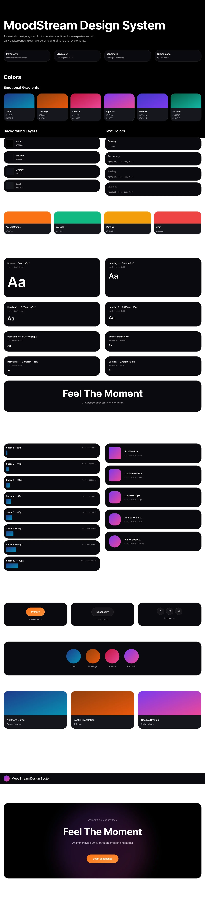

The brief
What if you stopped browsing by genre and started browsing by feeling? MoodStream is a concept for a media platform that drops genre as the primary navigation. Instead of “Action,” “Drama,” “Indie Rock,” you choose how you want to feel. Focused, melancholic, in motion, curious. The platform then serves film and music that match.
The idea started as a frustration with my own behaviour. I open Netflix or Spotify, scroll through categories that don't describe what I'm actually looking for, and close the app five minutes later. Genre is a librarian's framework. Mood is how people actually decide.
A spectrum, not a grid
The core interaction is a mood selector. Not a list of genres but a navigable space of emotional states. You orient yourself within that space, and the content reorders around you. The UI had to feel calm and atmospheric, more like adjusting lighting than browsing a database.
The interface should feel like the mood it's helping you find.


Designed as a system, not screens
Because the platform's character had to feel consistent across very different content types (moving image, static covers, audio), I built out a small design system early. Type scale, mood color tokens, component library. It made the high-fidelity work go three times faster.

Scroll behaviour as part of the mood
Motion was a deliberate part of the design. Slow, weighted scroll, transitions that fade rather than cut, micro-animations that feel like breath rather than feedback. The platform should feel like it's listening, not reacting.

The honest hard part
MoodStream is where I started thinking about tone as a design material. Not just typography or color, but the felt sense a product gives off. It's harder to articulate than usability but it's often what makes someone come back, or not.
The harder, unfinished question: how do you actually build a mood taxonomy that works across cultures and individuals? “Melancholic” means something different to everyone. A next pass would treat mood as something you tune over time, not something you select from a menu. That's a much bigger project than the brief I gave myself.